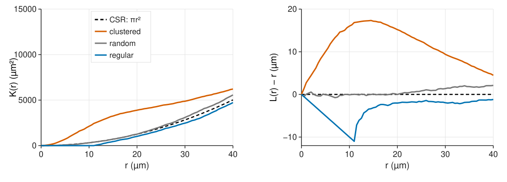
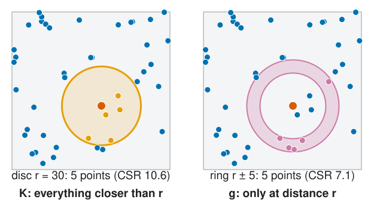
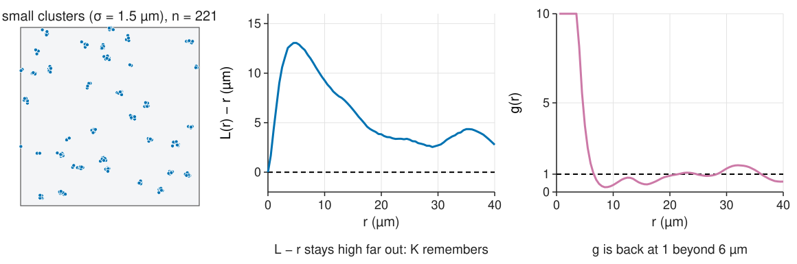
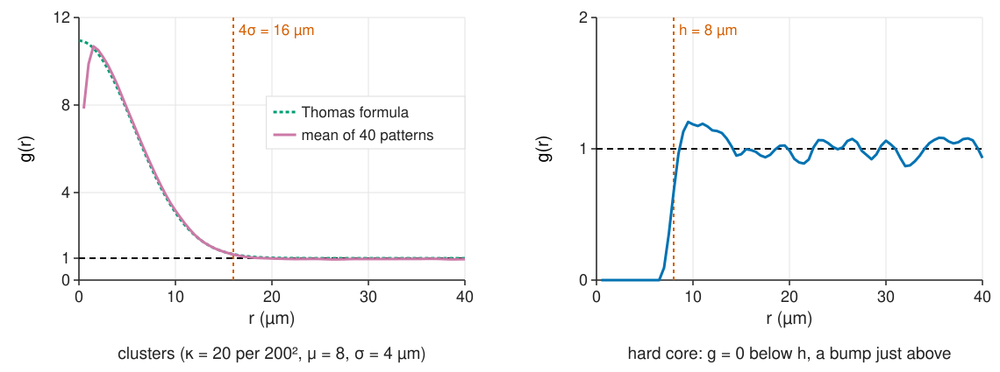
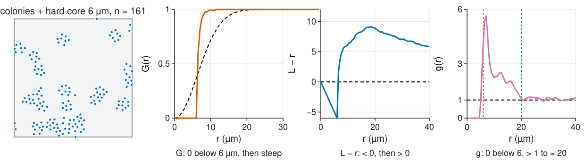
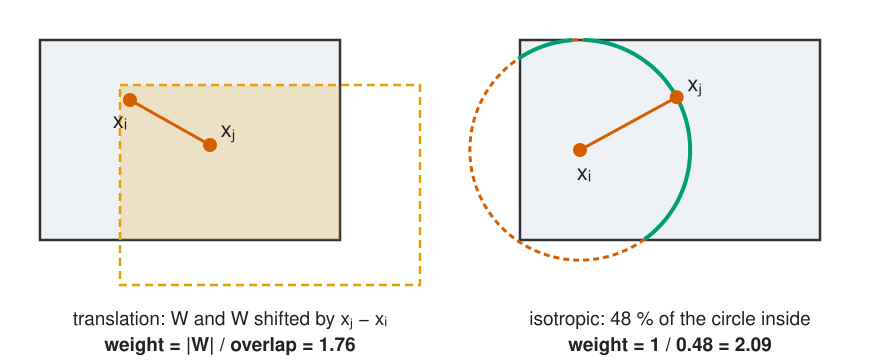
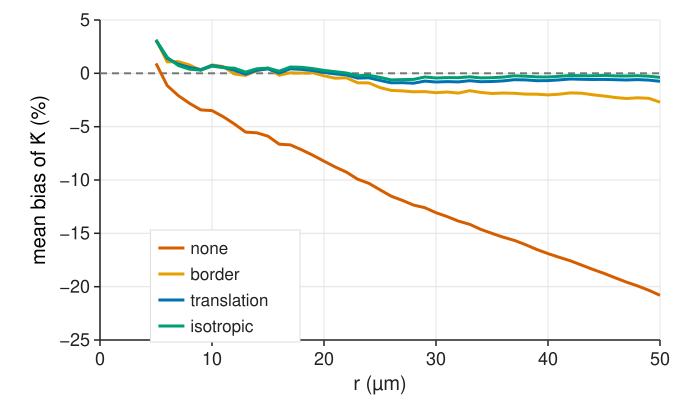

For each point, count the other points within r. Average over all points and divide by ρ: that is K(r). Under CSR the expected count is \rho\pi r^2, so K(r) = \pi r^2.
The math: the K function
\rho K(r) = E[\text{number of further points within } r \text{ of a typical point}].
CSR: by Slivnyak the other points are Poisson(ρ), so \rho K(r) = \rho\pi r^2.
Estimator, without edge correction: \hat K(r) = \frac{|W|}{n(n - 1)}\sum_{i \ne j} [d_{ij} \le r], where n(n-1)/|W|^2 estimates \rho^2 and the sum counts ordered pairs closer than r.
Units: µm². In 3D, K(r) = \tfrac43\pi r^3 under CSR (pointer: 3D volumes).
L(r) − r: a flat line for CSR

L(r) = \sqrt{K(r)/\pi} turns the parabola into the straight line L = r. Plot L(r) − r: 0 random, > 0 more neighbours than CSR at that distance (clustered), < 0 fewer (regular). Taking the square root also roughly evens out the variance across r.
The pair-correlation function g

Count neighbours in a thin ring at distance r instead of a disc, and divide by what CSR gives in the same ring:
g = 1: as many pairs at distance r as chance;
g > 1: more pairs at that distance; g < 1: fewer;
g = 0: impossible distances (a hard core).
g is the derivative of K, made dimensionless.
The math: pair correlation
g(r) = \frac{K'(r)}{2\pi r} \qquad (\text{CSR: } K' = 2\pi r,\ g = 1).
\rho^2 g(r) is the density of pairs at distance r (the second-order product density).
Kernel estimator with a smoothing kernel k_h of half-width h (Epanechnikov): \hat g(r) = \frac{|W|}{n(n - 1)}\sum_{i \ne j}\frac{w_{ij}\,k_h(r - d_{ij})}{2\pi d_{ij}}.
h is the bin width of a histogram of pair distances (recall the histogram unit): small h noisy, large h smears out sharp features (it also biases g near r = 0).
Cumulative vs local

K at r contains every pair closer than r: a cluster scale of 3 µm keeps L - r high at 30 µm (“K remembers”). g answers “at this distance” only. g is noisier (thin rings hold few pairs) and needs a bandwidth; K and L need none.
Reading the scales

Clusters: g starts high and falls to 1 at about the cluster diameter (≈ 4σ for Gaussian offspring). The height says how many extra neighbours a point has in its own cluster.
Hard core: g = 0 below h, a packing bump just above, then 1.
The math: the Thomas process
Two offspring of the same parent are each displaced by N(0, \sigma^2 I), so their difference is N(0, 2\sigma^2 I): its length D has P(D \le r) = 1 - e^{-r^2/4\sigma^2}.
A typical point has, besides the CSR neighbours of all other clusters (\rho\pi r^2), on average \mu siblings, of which a fraction P(D \le r) lies within r. With \rho = \kappa\mu: K(r) = \pi r^2 + \frac{1 - e^{-r^2/4\sigma^2}}{\kappa}, \qquad g(r) = 1 + \frac{e^{-r^2/4\sigma^2}}{4\pi\kappa\sigma^2}.
g(0) - 1 = 1/(4\pi\kappa\sigma^2); at r = 4\sigma the excess g - 1 has dropped to e^{-4} \approx 2 % of that value.
Fitting κ and σ to \hat K (“minimum contrast”) estimates the cluster size and the points per cluster (\mu = \rho/\kappa).
Two scales at once

Cells in colonies, each cell keeping a minimum distance (it has a size). g: 0 below the cell diameter, above 1 up to the colony size, 1 beyond. The quadrats (unit 1) and G each see one of the two effects; g sees both.
Try it: K, L and g
Edge corrections for pairs

A pair near the border is seen less often than one in the middle. Count it with a weight = 1 / (how likely such a pair was to be seen):
translation: |W| / overlap of W with W shifted by \mathbf x_j - \mathbf x_i;
isotropic (Ripley): 1 / fraction of the circle through \mathbf x_j around \mathbf x_i inside W;
border: only centre points farther than r from the border (as for G).
How large is the bias?

200 CSR patterns of 100 points in 200 × 200 µm:
no correction: −8 % at r = 20 µm (a tenth of the side), −21 % at 50 µm (a quarter): K biased down, the pattern looks regular;
translation, isotropic: within 1 %;
border: unbiased in principle, but noisier and here −3 % at 50 µm.
Use r up to about a quarter of the shorter side of the window; fix the range before looking (unit 4).
Horvitz–Thompson argument: for a stationary pattern a pair with difference vector \mathbf v lands in W with both points only if the first point lies in W \cap (W - \mathbf v), which has area |W \cap (W + \mathbf v)|. Weighting each observed pair by |W| / that area makes the expected sum equal to what a full window would give.
For a rectangle a \times b: weight = ab / ((a - |\Delta x|)(b - |\Delta y|)).
In a tissue mask the overlap areas come from one FFT autocorrelation of the mask (the set covariance).
Try it: corrections
Where this leads
Unit 4: the curve differs from \pi r^2, but is that more than chance? Simulate CSR, compute the same curve, compare; and beware testing many r at once.
Unit 5: the cross-K between two cell types (the object colocalisation unit used it for two-colour spots), and K for an uneven density.
Fitting a cluster model (κ, σ) to \hat K gives the cluster size directly; finding the clusters themselves is a clustering problem (k-means).
Summary
K(r): mean number of neighbours within r, divided by ρ; CSR: \pi r^2. L − r: 0 random, > 0 clustered, < 0 regular.
g(r): pairs at distance r relative to CSR; 1 random, > 1 more pairs, 0 impossible distances.
K is cumulative (remembers small scales), g is local (but noisier, needs a bandwidth).
Read cluster size where g returns to 1, the hard core where g leaves 0; a pattern can be regular and clustered at different scales.
Without an edge correction K is biased down (−8 % at a tenth of the side, −21 % at a quarter); translation or isotropic weights fix it. Use r up to a quarter of the window.